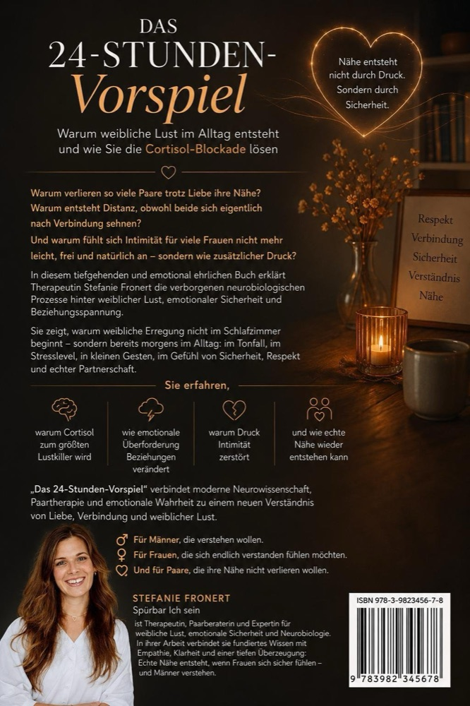

☀️
Gewohnheit 1
Freundlich starten
Ein liebevoller Start in den Tag stellt die Weichen für alles, was folgt. Ein Lächeln am Morgen sagt: „Ich bin für dich da."
Mein Buch
Warum weibliche Libido im Alltag entsteht und wie du die Cortisol-Blockade löst.
Echte Nähe beginnt nicht im Schlafzimmer, sondern schon beim Frühstück. In meinem Buch zeige ich, warum weibliche Libido keine Frage der richtigen Technik ist, sondern von Sicherheit, Respekt und Verbindung im Alltag, und wie ihr die Stresshormone löst, die echte Intimität ausbremsen.
Fundiert auf Nervensystem und Hirnforschung, warmherzig und alltagsnah geschrieben: ein wertvoller Ratgeber für Männer, die verstehen wollen, für Frauen, die sich endlich verstanden fühlen möchten, und für Paare, die ihre Nähe bewahren wollen.
6×9-Format · 250 Seiten · ISBN 979-8199739627
Worum es geht
Ihr teilt Alltag, Bett und Küche, und trotzdem liegt eine unsichtbare Wand zwischen euch. Aus Vertrautheit ist Routine geworden, echte Begegnung selten.
Was leicht sein sollte, wird zur Aufgabe. Lust auf Knopfdruck funktioniert nicht, und je größer der Druck, desto weiter rückt die Nähe weg.
Gerade bei Frauen drückt das Stresshormon Cortisol den Not-Aus-Schalter für die Libido. Wer den ganzen Tag im Anspannungsmodus läuft, kann abends nicht einfach auf Nähe umschalten, das ist Biologie, keine Bestrafung.
Aus dem Buch · Neurowissenschaft für Paare
Fühlen wir uns sicher, können wir lieben. $1
Besonders die weibliche Libido reagiert sensibel auf dieses Sicherheitsgefühl. Sie entsteht dort, wo sich eine Frau sicher, gesehen und respektiert fühlt, nicht auf Knopfdruck. Deshalb beginnt weibliche Erregung nicht im Schlafzimmer, sondern schon morgens im Alltag: im Tonfall, im Stresslevel, in kleinen Gesten.
Alarm-Modus · Stress
Wenn Kritik, Druck, Ablehnung oder Dauerstress überwiegen:
Folge: Distanz · Missverständnisse · Rückzug
Verbindungs-Modus · Entspannung
Wenn Sicherheit, Verständnis, Humor und echte Nähe überwiegen:
Folge: Nähe · Vertrauen · Leichtigkeit · Liebe
Das Buch
Stefanie Fronert · Spürbar Ich sein

„Kleine Momente der Verbindung verändern das Gehirn, jeden Tag neu."
Aus dem Buch · Der tägliche Unterschied
Kleine Momente der Verbindung sind wie Dünger für die Liebe. Das Gehirn formt sich jeden Tag neu.
Ein liebevoller Start in den Tag stellt die Weichen für alles, was folgt. Ein Lächeln am Morgen sagt: „Ich bin für dich da."
Wirklich zuhören beruhigt die Alarmanlage im Kopf. Validierung statt Lösung: „Erzähl mir, was dich beschäftigt."
Viele kleine Momente sind wie Dünger für die Liebe. Eine Umarmung, ein Danke, ein Kuss, alles zählt.
Atmen, pausieren, herunterkommen, zusammen statt getrennt. Tief einatmen, ausatmen: „Wir sind ein Team."
Den Tag bewusst und positiv abschließen, füreinander präsent sein: „Wofür bin ich dir heute dankbar?"
Jetzt beginnen
Das 24-Stunden-Vorspiel beginnt nicht im Schlafzimmer. Es beginnt heute Morgen. Mit dir. Mit euch.
Das Buch ist ein Anfang. Wenn ihr tiefer gehen möchtet, begleite ich euch in der Paartherapie, in Düsseldorf und online.
Paartherapie ansehen